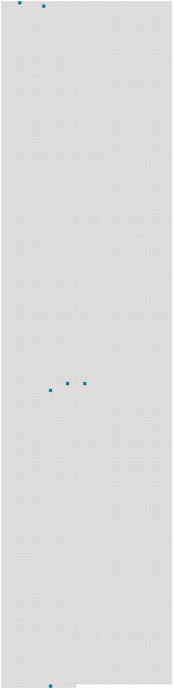

Longueur nb maillons : 6 mentions |
 |
Vous vouliez donc aller à [Lyon] ?? [3 phrases]
— Mais je lui ai dit moi -même que j'allais à [Lyon] [249 phrases] Les engagements de Laurence avec le théâtre d'Orléans l'avaient forcée de les y devancer ; mais elle leur avait donné rendez -vous à [Lyon] , et Laurence voulait [y] arriver en même temps qu'elles, sachant bien que sa mère et sa sœur, après quinze jours de séparation ( la première de leur vie ), l'attendraient impatiemment. Cependant l'aveugle insista tellement, et Pauline, à l'idée de se séparer de nouveau, et pour jamais sans doute, de son amie, versa des larmes si sincères, que Laurence céda, écrivit à sa mère de ne pas être inquiète si elle retardait d'un jour son arrivée à [Lyon] , et ne commanda ses chevaux que pour le lendemain au soir. [171 phrases] Tandis que la soubrette lissait et tressait les magnifiques cheveux noirs de Laurence, celle -ci repassait le rôle qu'elle devait jouer à [Lyon] , à trois jours de là. |
 |
La ressource peut être téléchargée sur la page Ortolang
Si vous avez des questions ou vous voyez des erreurs, merci d'envoyer un mail à silvia.federzoni89@gmail.com
Site développé par S. Federzoni (contact)